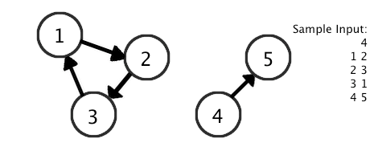

Given a directional graph (think of it as a map of one way streets), cycles (a loop) are often involved in various problems. We know that one (and only one) cycle exists, and we want to find its length.
The input file DATA5.txt will contain 5 sets of input. The first line will contain a single integer, 1 <= N <= 100, the number of pairs describing the graph. This is followed by N lines, each having two integers separated by a space. Each of the integers refers to a node, with a directional path from first to second. Node IDs are between 1 and 100, inclusive. The first node in the list is guaranteed to have a path to the cycle.
For example: If the graph is described by 4 pairs: 1 2, 2 3, 3 1, 4 5; Then it describes a disjoint graph -- a cycle of length 3 and another pair of nodes. Since it's guaranteed that starting at Node 1 will lead to a cycle, it shouldn't matter that it's not connected to 4 or 5.
Note: a node could link to itself (1 -> 1) and that will form a cycle of size 1.
The output file OUT5.txt will contain 5 lines of output, each an integer size of the cycle found in a graph.
1 1 1 2 1 2 2 1 3 1 2 2 3 3 1 4 1 2 2 3 3 1 4 5 5 1 4 1 2 2 3 3 1 4 5
1 2 3 3 3